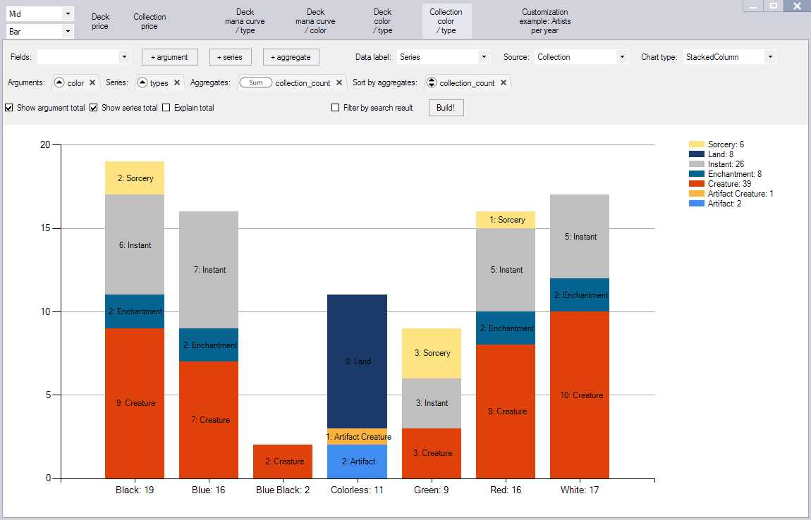
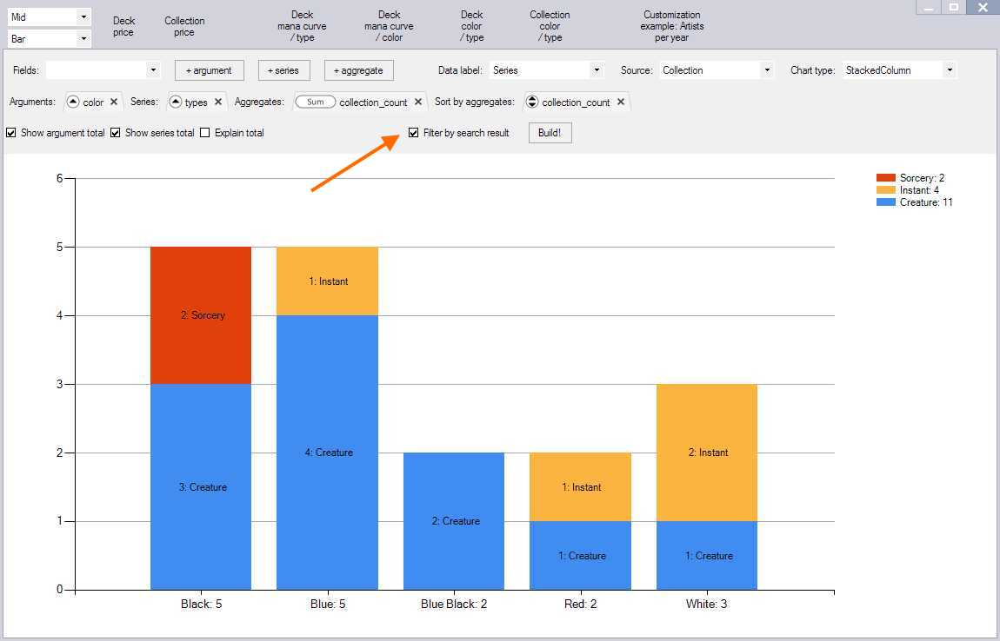
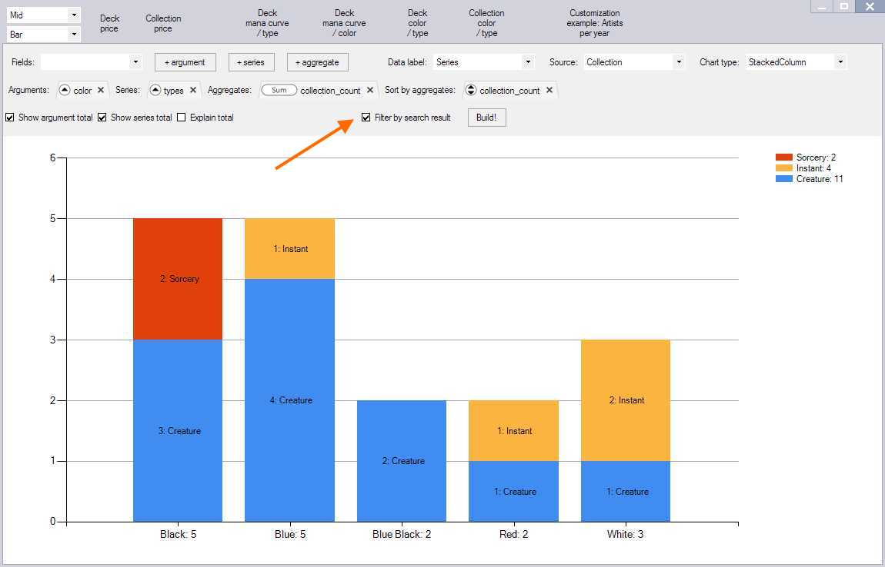

Forge
Import decks
Forge stores its *.dck deck files in following locations
C:\Users\<username>\AppData\Roaming\Forge\decks
<forge installation directory>\res\quest\world\<subdirectories>
Deck files can be opened by using Load button from window header.
You can also drag-n-drop files and folders
with deck files into Mtgdb.Gui
Import sealed deck cards as Mtgdb.Gui collection
Suppose you are playing a Sealed Deck match in Forge. Before playing the match you build a deck from 90 cards in Forge deck editor.
What if you want to build the deck in Mtgdb.Gui instead? Forge developers took care, so it's possible.
The list of cards available to you when building the deck in Forge can be copied to clipboard.
Switch the list of available cards to List View mode, select all cards in it and copy them by hitting
Ctrl + C.
{kind=link}
Paste selected cards as Collection in Mtgdb.Gui, to do this
press Alt + V or pick Paste collection from Clipboard in Paste menu

The next step is to enable Filter by Collection
and voila - you are working with the 90 cards from Sealed deck boosters to build your deck.
{kind=link}
Benefits
You get access to all Mtgdb.Gui features while building your deck to play a sealed deck match in Forge. For example you can quickly estimate color distribution within available cards:
{kind=link}
You can further estimate color distribution within the cards that have the synergy you are looking for:
 

{kind=link}